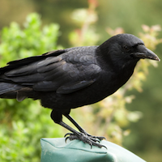

Stealth, hipster hunting ability, enhanced senses of smell and hearing, as well as strength and stamina
She's a wolverine!
Katie's a wolverine!
Katie's Twitter Characters: Lycas, Nilo, Sirin, and Drenis in the Aspect of Crow trilogy; Marcus in "The Wild's Call" Powers: Fighting ability—strength, speed, and toughness Nobody messes with Wolverines. She's fearless, assertive, and tenacious. She's the best at whatever she chooses to do, because she give herself no alternative.
Characters: Mayra, Elora, Pirrik, and Zelia in the Aspect of Crow trilogy; Gina in "The Wild's Call"; Erik in "Storm Reaper" Powers: Healing Otters are nurturing, playful, and easygoing. You often put others' needs before your own, offering what seems to be a bottomless well of compassion and care. Though your decisions are guided by your feelings, at heart you're pragmatic and self-possessed, making you the ideal head of a family or small business. Best matches: Horses, Wolves, Swans Watch out for: Foxes, Cougars, Hawks

She's CrowCrow
Pooja is a crow!
As a Crow, you are analytical, adaptable, and exceedingly clever. You like solving problems, sharing a hearty laugh with friends, and most of all, enjoying a good meal. Your inquisitive, philosophical nature leads you to constantly question authority and the status quo, sometimes just for the sake of asking, "Why?"